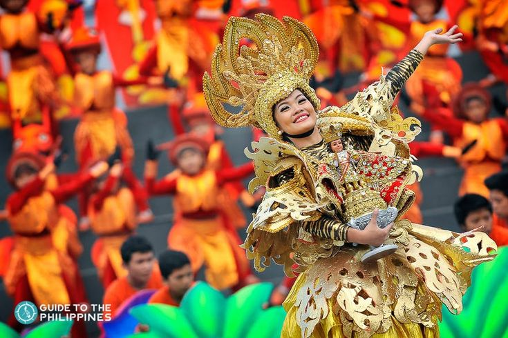
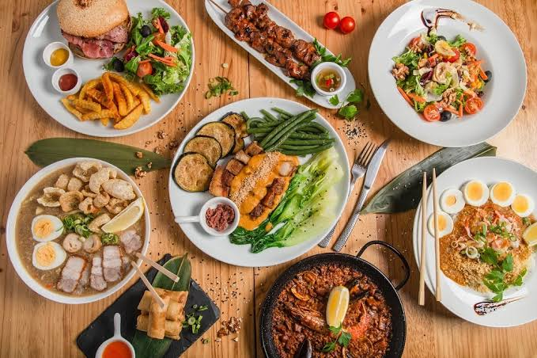

Day,
Month
00,
Year
00:
00:
00
AM
Portuguese navigator Ferdinand Magellan found the Philippines in 1521 while searching for a route west to the Spice Islands. The Spanish expedition led by Magellan—who was killed in the Battle of Mactan—made contact with the local populations. Despite this, the Spanish returned, and in 1565 Miguel Lopez de Legazpi established Cebu's first Spanish settlement, starting more than three centuries of Spanish rule.
Southeast Asian island nation, the Philippines. Its borders are the Sulu Sea to the southwest, the Celebes Sea to the south, the Philippine Sea to the east, and the South China Sea to the west and north. At its southern base, the archipelago is approximately 700 miles (1,130 km) in width from east to west and 1,150 miles (1,850 km) in length from north to south. Originally estimated to number 7,107, the islands were eventually found to number over 7,600. Only around two-fifths of the approximately 350 islands that are at least one square mile (2.6 square kilometers) in size have names. The three main groups of islands are Mindanao (south), Visayas (middle), and Luzon (north and west).
There are three distinct seasons in the Philippines' tropical marine climate: Tag-init/El nino (hot and dry), Tag-ulan/La Nina (rainy), and Tag-lamig (cool and dry). Typhoons frequently occur in the wet season.
Because of its location inside the Pacific Ring of Fire, the Philippines frequently experiences earthquakes and volcanic eruptions. Typhoons, also known as tropical cyclones, happen often, especially from June to November.
Because of its location inside the Pacific Ring of Fire, the Philippines frequently experiences earthquakes and volcanic eruptions. Typhoons, also known as tropical cyclones, happen often, especially from June to November.
The Philippines harbors a multitude of ethnic communities. The peoples of Tagalog, Cebuano, Ilocano, and Bisaya are among the main groupings.
The multilingual country recognizes English and Filipino, a language derived from Tagalog, as official languages. There are numerous regional languages and dialects spoken throughout the archipelago.
The majority religion in the Philippines is Roman Catholic, which dates back more than three centuries to Spanish colonization. Protestant and Muslim minorities are also sizable.
The Philippines is a nation where the cultures of East and West collide. The Filipino people have strong Western traditions, but they are unmistakably of Asian heritage. Chinese traders, Spanish conquistadors, and Americans all influenced the evolution of contemporary Filipino culture. Filipinos are recognized for their warmth, especially toward visitors from the West. Because of their strong ties to Spanish culture, Filipinos have an infectious enthusiasm and passion for life that makes them seem more Latin than Asian.
vibrant events with many colors that happen all over the archipelago. These festivities, which include customary songs, dances, and costumes, usually include elements of history, culture, and religion.
Filipino cuisine combines flavors from China, Spain, the United States, and the native people. Popular street foods and dishes include adobo, sinigang, and lechon
The Philippines is a nation where the cultures of East and West collide. The Filipino people have strong Western traditions, but they are unmistakably of Asian heritage. Chinese traders, Spanish conquistadors, and Americans all influenced the evolution of contemporary Filipino culture. Filipinos are recognized for their warmth, especially toward visitors from the West. Because of their strong ties to Spanish culture, Filipinos have an infectious enthusiasm and passion for life that makes them seem more Latin than Asian.
Make sure to sample the renowned Tinawon rice while in Ifugao. Keep an eye out for the bulul while you look for rice. To protect their rice crops, they have a carved wooden figure in place. If you still can't get enough rice, explore the Rice Terraces of the Philippines, a UNESCO cultural landscape, and climb the 2,000-year-old Banaue Rice Terraces, which the Ifugao people chiseled out of the mountains. Attend the traditional wooden scooter race at the Gotad Ad Ifugao festivals, which are held every June to highlight the ancient cultures and customs of the region, to round off your trip.
One of the most popular weekend getaway spots for young people living in Metro Manila. This relaxed seaside town is well-known for its surfing locations, but few people realize that it also offers a plethora of other cultural and natural attractions, including waterfalls, red clay pottery, grape picking, loom weaving, churches for pilgrimage tours, and eco-tours. Explore La Union's offerings and extend your stay beyond a short weekend.
You will be thrilled to visit the charming Vigan in Ilocos Sur, which is a UNESCO World Heritage site. The well-preserved Spanish-era houses give the impression of being transported back in time. Remember to stop and sample some of the town's specialties, like Ilocos empanadas and Vigan longganisa, when you're out and about.
For Philippine culture, history, shopping, and nightlife, Manila is a great central location. You'll arrive to vibrant streets full of moving vehicles, tall buildings, and exuberant people, but you'll also never run out of enjoyable things to do.
See the capital of Palawan, which is also home to the renowned Underground River and a UNESCO World Heritage site. Travelers going to other well-known Palawan destinations like El Nido and Coron will have to pass through this area. But The City in a Forest is more complex than it first appears. You'll be shocked to learn that Puerto Princesa offers a variety of tourists both natural and cultural wonders.
One of the most well-liked beach and island destinations in Palawan is Coron. The eastern half of Busuanga Island, Coron Island, and fifty other nearby islets—all of which are unconnected to the main Palawan island—make up this paradisiacal retreat. Its stunning rock formations, unbelievable clear waters, and World War II wreck diving spots have drawn a lot of attention. Because of its stunning waters and surroundings, it is also regarded as the more sedate and easygoing sibling of El Nido, another well-known Palawan destination. When visiting the Philippines, Coron is definitely worth adding to your travel bucket list because of its distinct charm.
Being the Philippines’ top tourist draw and most famous beach took its toll on the island of Boracay. After taking a break for 6 months, Boracay reopens greener than ever—and everything is pristine like never before. Learn more about the new Boracay and be prepared to fall in love all over again. With glorious White Beach and the country's best island nightlife on its resume, it's easy to understand why Boracay is the Philippines' top tourist draw. Alas, the tiny island proved too popular for its own good: In 2018 Boracay was placed in "rehab," closed for 6 months to ease the strain on its fragile environment and fix the infrastructure and carrying capacity.
The home of the famous Chocolate Hills, Bohol is one of the most visited destinations in the Central Visayas region of the Philippines. The island province offers breathtaking spots for history buffs, beach lovers, and adrenaline junkies. Bohol is comprised of one major island and 73 smaller ones surrounding it, so you'll have plenty of places to explore during your trip here. One thing’s for sure: You’ll enjoy every second of your stay and love the diversity that Bohol offers.
Nestled in the azure embrace of the Philippine Sea, Catanduanes Island is a tropical paradise defined by its lush landscapes, pristine beaches, and captivating rugged terrain. The island province is a haven beckons with its vibrant flora, inviting waters, and a rich cultural tapestry that weaves tales of resilience and natural beauty.
The regional hub of the Davao Region is Davao City. It is the third-biggest city in the Philippines and the most populated city in Mindanao. One of the most significant economies on the island and the third-largest urban center in the Philippines is Davao City, which is well-known for its thriving business district, urban development, and contemporary amenities.
The hub of Mindanao's business, trade, information technology, and adventure tourism is Cagayan de Oro City. Indeed, it has emerged as the premier convention hub for Mindanao and the Visayas. There are many different types of facilities available to those who are organizing conventions or other events, such as reasonably priced training centers and spacious convention halls. It is known as the "City of Golden Opportunities" and serves as the hub for investment in the region as well as the regional hub for growth in Northern Mindanao. Additionally, it serves as a transshipment hub for industrial and agricultural products from neighboring provinces.
Of the 39 waterfalls that the barangay heads in Iligan City have reported, 23 have been confirmed. The most well-known of these is Maria Cristina Falls, which the National Power Corporation first used in the 1950s. Nearly the whole Island of Mindanao is powered by the electricity produced by the falls, not just the City of Iligan.
Situated in the southwest of the island of Mindanao, Sultan Kudarat was formerly a part of the province of Cotabato, which was under the former empire. This province does in fact contain hundreds of first-class caves. Additionally, the province leads the Philippines in coffee production.
The Province of Sarangani is situated in the tropical paradise that is the southernmost point of the Philippines. The serene, well-maintained white sand beach is a haven for nature enthusiasts. Enthusiasts of diving and snorkeling will find endless opportunities to explore the amazing diving grounds with their diverse and unspoiled coral gardens. The vibrant marine life will enthrall visitors, and it won't come as a surprise if they become enamored with Sarangani's incredible underwater treasures.
(n.d.). Home - Love the Philippines! Welcome to the DOT's Corporate Site. Retrieved November 27, 2023, from http://www.tourism.gov.ph/
(n.d.). Explore more things to love! | Department of Tourism Philippines. Retrieved November 27, 2023, from https://philippines.travel/
\/. (2023, June 16). YouTube. Retrieved November 27, 2023, from http://www.bridgestravel.com/philippines/philippines.htm
Culture of the Philippines. (n.d.). CSUB. Retrieved November 27, 2023, from https://www.csub.edu/pacificrim/countryprospectus/culture.htm
Demographics of the Philippines - statistics & facts. (2023, June 2). Statista. Retrieved November 27, 2023, from https://www.statista.com/topics/5799/demographics-in-the-philippines/#topicOverview
Furlong, M. J. (n.d.). Demographics of the Philippines. Wikipedia. Retrieved November 27, 2023, from https://en.wikipedia.org/wiki/Demographics_of_the_Philippines
History of the Philippines | People, Spain, United States, Revolution, Map, & Facts. (2023, October 16). Britannica. Retrieved November 27, 2023, from https://www.britannica.com/topic/history-of-Philippines
Philippines History • FamilySearch. (2022, December 5). FamilySearch. Retrieved November 27, 2023, from https://www.familysearch.org/en/wiki/Philippines_History
Philippines | History, Map, Flag, Population, Capital, & Facts. (n.d.). Britannica. Retrieved November 27, 2023, from https://www.britannica.com/place/Philippines#ref23724
Philippines History • FamilySearch. (2022, December 5). FamilySearch. Retrieved December 6, 2023, from https://www.familysearch.org/en/wiki/Philippines_History#Timeline
Jacobo, J. (2023, June 14). Mayon volcano eruption wreaking havoc on Philippine island could last for months. ABC News. Retrieved December 6, 2023, from https://abcnews.go.com/International/mayon-volcano-eruption-wreaking-havoc-philippine-island-months/story?id=100069038